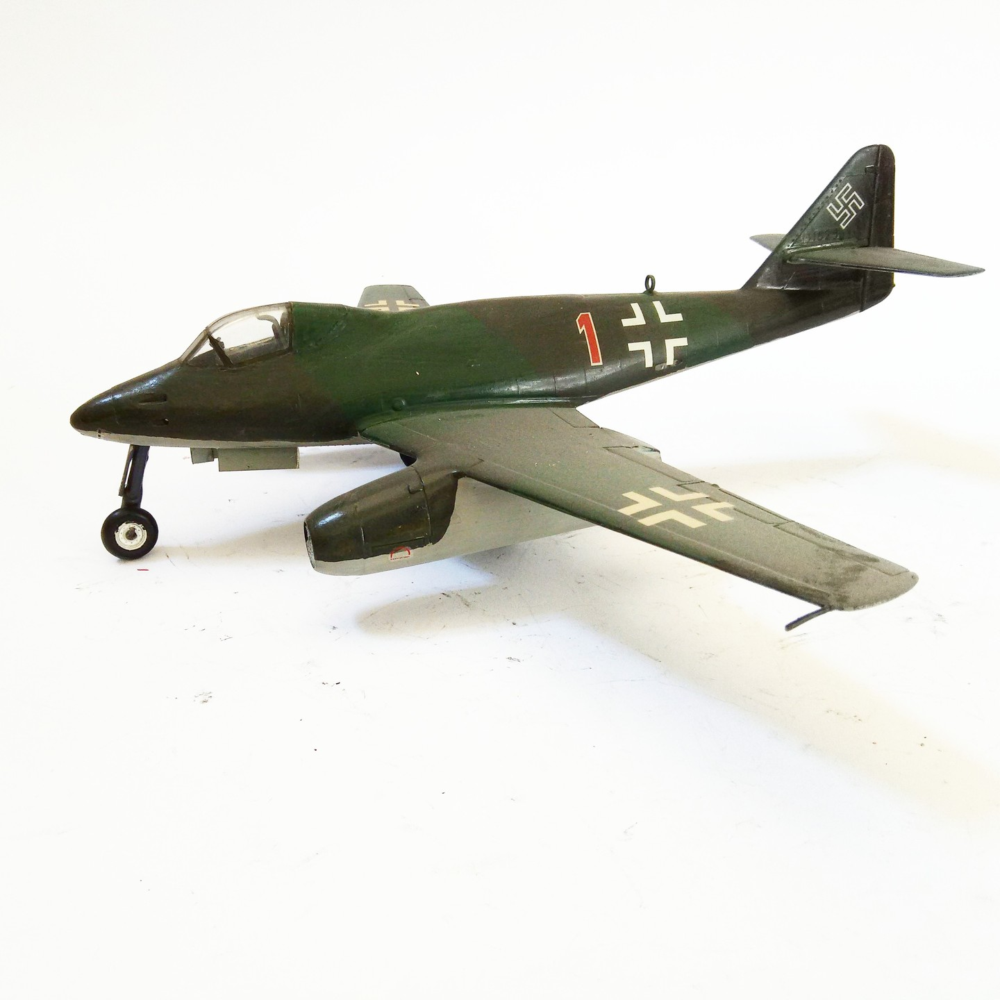

Aerei · scale model archive
Messerschmitt Me262 'Forward cockpit ' project
Messerschmitt Me262 'Forward cockpit ' project — Kit: Conveersion, Scale: 1/48. I believe it could have workerd very well #1/48 #Conversion

Photo gallery
English description
I believe it could have workerd very well
#1/48 #Conversion
Descrizione italiana
credo lo could have workerd very well.